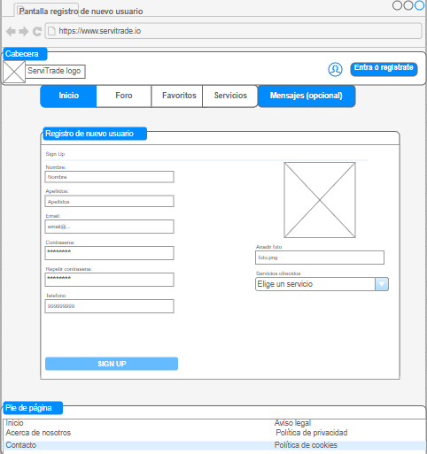
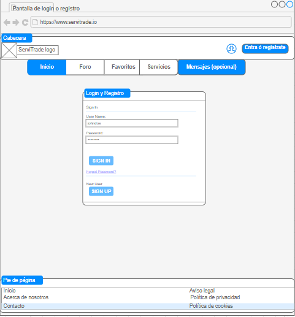
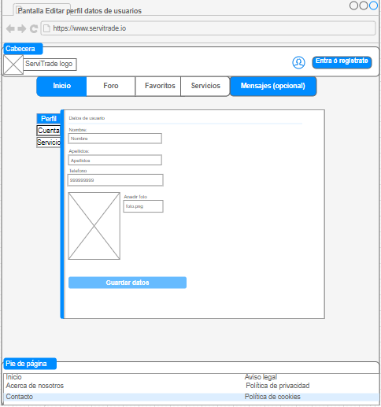

Descripción de la página principal...


Descripción de la página de registro...
Descripción de la página de usuario...
 Descripción de la página de cada servicio...
Descripción contratar un servicio.

En el apartado del foro se podrán abrir nuevos temas para conversar entre los usuarios de la página. Aparece un foro por cada tipo de sevicio. Si un usuario quiere ver los mensajes de un serivicio específico, selecciona un foro concreto.

En el apartado del foro se podrán visualizar los mensajes para ese servicio concreto.

En este apartado, se pueden ver las reseñas que dejó un usuario a la persona que le ofreció el servicio. Cada usuario tendrá la opción de comentar con estrellas según la puntuación de la calidad del servicio realizado, y opiniones.

En este apartado, salen guardados los servicios que un usuario marcó como favoritos.